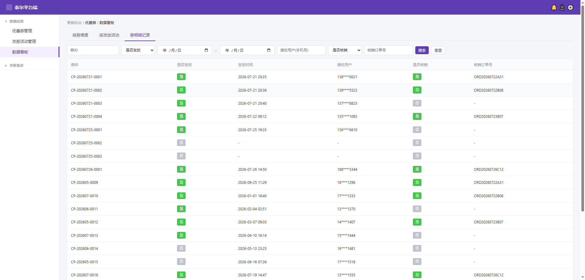

需求影响范围：本期新增的数据看板统计 Tab，不影响既有优惠券列表/发券活动配置等功能，仅做只读展示。
涉及终端：仅平台端后台可见；商家端后台本期不实现。
下图为平台端后台「数据看板 → 券明细记录」Tab 当前原型截图：

截图来源：用户 2026-08-01 提供，对应 coupon-platform.html「券明细记录」Tab。
yyyy-MM-dd HH:mm。13800000021）。23:59 计算，覆盖整天。| 场景 | 系统行为 | 提示文案 |
|---|---|---|
| 无券明细数据 | 列表区域展示空状态，隐藏分页器 | 「暂无数据」 |
| 网络异常/接口超时 | toast 提示失败，保留当前页面结构 | 「数据加载失败，请稍后重试」 |
| 筛选结果为空 | 列表区域展示空状态，分页器显示 0 条 | 「暂无符合条件的数据」 |
| 字段名称 | 需求说明 | 备注 |
|---|---|---|
| 券ID | 券实例的唯一标识，如 CP-20260721-0001。 |
是否支持模糊搜索：是 |
| 是否发放 | 标识该券实例是否已发放给用户。枚举：是 / 否。 | 「是」绿色 tag，「否」灰色 tag |
| 发放时间 | 券实例实际发放给用户的时间。未发放时显示「-」。 | 格式 yyyy-MM-dd HH:mm |
| 接收用户 | 接收该券的用户手机号，不脱敏，直接展示完整手机号。 | 未发放时显示「-」 |
| 是否核销 | 标识该券是否已被核销使用。枚举：是 / 否。 | 「是」绿色 tag，「否」灰色 tag；未发放时一般为「否」 |
| 核销订单号 | 该券被核销时关联的订单号。未核销时显示「-」。 | 是否支持模糊搜索：是 |
本页为只读统计列表，无操作按钮。筛选栏的「搜索」「重置」属于查询控件，详见 2.6 查询条件。
本页为只读统计列表，无编辑/新增表单。
| 查询条件 | 查询说明 |
|---|---|
| 券ID | 文本输入框，模糊匹配券实例 ID。占位文案：「券ID」。 |
| 是否发放 | 下拉单选，选项：全部 / 是 / 否。默认「全部」。 |
| 发放时间 | 日期范围选择器，分开始日期、结束日期两个控件，用「~」连接。结束日期按当日 23:59 计算。 |
| 接收用户 | 文本输入框，模糊匹配用户完整手机号（后台不脱敏）。占位文案：「接收用户(手机号)」。 |
| 是否核销 | 下拉单选，选项：全部 / 是 / 否。默认「全部」。 |
| 核销订单号 | 文本输入框，模糊匹配订单号。占位文案：「核销订单号」。 |
| 字段名称 | 取值逻辑说明 |
|---|---|
| 券ID | 取《user_coupon》表 id 字段，按系统当前生成的格式展示。 |
| 是否发放 | 取《user_coupon》表 user_id IS NOT NULL 判定为「是」，user_id IS NULL 为「否」。 |
| 发放时间 | 取绑定用户的时间（即 user_coupon 表中 user_id 绑定时的 bind_time 字段）。 |
| 接收用户 | 取《user_coupon》表 user_id，关联《user》表 phone 字段，不脱敏，直接展示完整手机号。 |
| 是否核销 | 取《user_coupon》表 status 字段，status = 'used' 为是，否则为否。 |
| 核销订单号 | 取核销时关联的订单号信息（即该券被核销使用时对应的订单编号，取自订单表 order_no 字段）。 |
本页为只读列表，不涉及券实例状态变更操作，因此不单独绘制状态流转图。券实例本身的状态流转（未使用 → 已使用 / 已过期等）见优惠券核心模块。
| 角色 | 权限 |
|---|---|
| 平台运营 | 可查看本页全部数据 |
| 平台管理员 | 可查看本页全部数据 |
以下接口名为草稿，最终命名以技术方案为准。
| 接口 | 说明 |
|---|---|
GET /admin/coupon/board/coupon-detail | 券明细记录列表；入参：page、pageSize、sortField、sortOrder、couponId、issued、startTime、endTime、userPhone、redeemed、orderNo。排序规则：有发放时间倒序在前，无发放时间排后。 |
| 本期不支持导出功能。 | |
本页无待确认项。